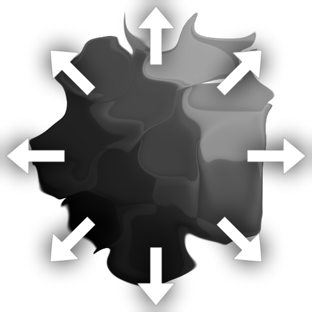
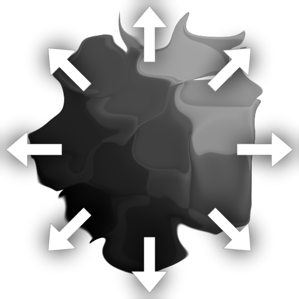

Multi Directional Warp
 

Multi Directional Warp (Grayscale)
In: Filters/Effects
Intermediate
Description
Multi-Directional Warp applies Directional Warp multiple times in opposite directions while the displaced texture stays in place. It differs from the standard Directional Warp in that it can push in multiple directions, whereas the atomic version only allows for one. In this way it solves the classic problem where Directional Warp always seems to push your image away too much in a single direction, instead it works along multiple directions or axes instead of a single direction.
It differs mainly from Non Uniform Directional Warp in that it is slightly more limited: the direction for the warp is only controlled through parameters, and can not be set through an input map. The advantage is it is slightly easier to use and can be more precise depending on your usecase.
Parameters
Inputs
- Input: Grayscale/Color Input
Base map to which the warping will be applied. Can be color or grayscale. - Intensity Input: Grayscale Input
Mandatory mask map that drives the intensity of the warping effect, must be grayscale.
Parameters
- Intensity: 0.0 - 20.0
Sets the intensity of the warp effect, how far to push pixels out. - Warp Angle: 0.0 - 1.0
Sets the Angle or direction in which to apply the Warp effect. - Mode: Average, Max, Min, Chain
Sets the Blend mode for consecutive passes. Only has effect if Direcions is 2 or 4! - Directions: 1, 2, 4
Sets in how many Axes the warp works. 1 means it moves in the direction of the Angle, and the opposite of that direction, 2 means the axis of the angle, plus the perpendicular axis, 4 means the previous axes, plus 45 degree inclements.